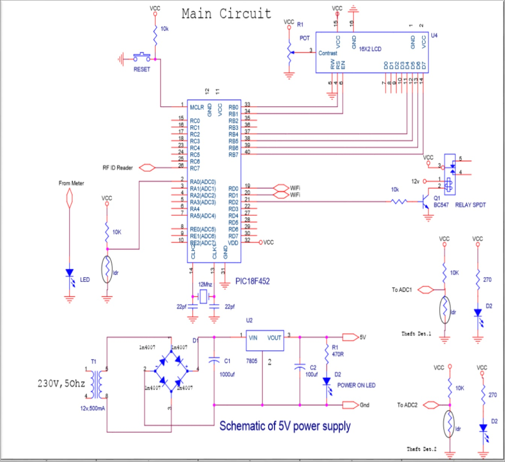
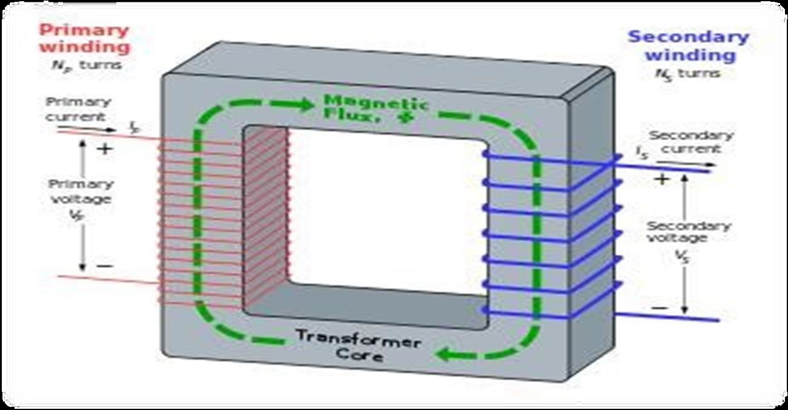
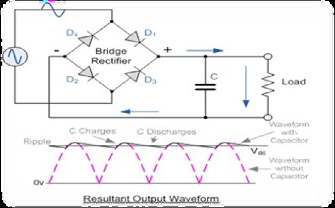
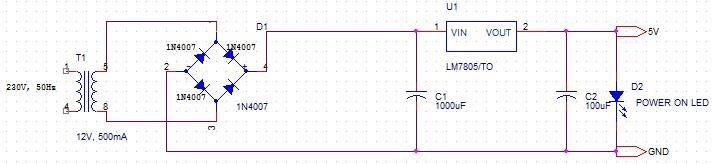

5. CIRCUIT DIAGRAM

A transformer is an electrical device that transfers electrical energy between two or more circuits through electromagnetic induction. Electromagnetic induction produces an electromotive force within a conductor which is exposed to time varying magnetic fields. Transformers are used to increase or decrease the alternating voltages in electric power applications.
Want to know more about Step down transformer & Electromagnetic induction then click on the link below.
A diode bridge is an arrangement of four (or more) diodes in a bridge circuit configuration that provides the same polarity of output for either polarity of input. A bridge rectifier provides full-wave rectification from a two-wire AC input, resulting in lower cost and weight as compared to a rectifier with a 3-wire input from a transformer with a center- tapped secondary winding.
Want to know more about Step down transformer & Electromagnetic induction then click on the link below.
A regulated power supply is very much essential for several electronic devices due to the semiconductor material employed in them have a fixed rate of current as well as voltage. The device may get damaged if there is any deviation from the fixed rate. The AC power supply gets converted into constant DC by this circuit. By the help of a voltage regulator DC, unregulated output will be fixed to a constant voltage. The circuit is made up of linear voltage regulator 7805 along with capacitors and resistors with bridge rectifier made up from diodes. From giving an to unchanging voltage supply building confident that output reaches uninterrupted to the appliance, the diodes along with capacitors handle elevated efficient signal conveyed.
| # | Software | Version |
|---|---|---|
| 1. | Programming | Embedded C language |
| 2. | Orcad capture | ------ |
| 3. | Express pcb | ------ |
| 4. | Socket test | 3.0.0 |
| 5. | TP-LINK wireless configuration utility | ------ |
| # | Component | No of component | Specification | Cost in rupees |
|---|---|---|---|---|
| 1. | Transformer | 1 | 12V, 0.5A | 150 |
| 2. | Diode | 8 | 1N4007 | 16 |
| 3. | Resister | 8 | - | 8 |
| 4. | Capacitor | 2 | 100uf,16V | 6 |
| 5. | Capacitor | 1 | 1000uf, 25v | 10 |
| 6. | LED | 3 | - | 3 |
| 7. | Preset | 1 | - | 6 |
| 8. | Reset Switch | 1 | 2 pin | 2 |
| 9. | 16x2 LCD | 1 | - | 130 |
| 10. | Relay | 2 | 12 v | 30 |
| 11. | Transistor | 1 | BC547 | 2 |
| 12. | Microcontroller | 1 | PIC18F452 | 250 |
| 13. | Crystal | 1 | - | 8 |
| 14. | Wi-Fi | 1 | ESP-01 | 500 |
| 15. | RF ID Reader | 1 | EM-18 | 550 |
| 16. | RF ID Tag | 1 | - | 20 |
| 17. | Connecting Wires | - | - | 20 |
| 18. | PCB | - | - | 200 |
| 19. | Analog Meter | 1 | - | 400 |
| 20 | Total | - | - | 2311 |
In the era of smart city advancement, this project is concentrated on the connectivity & networking factor of the IOT. In this project, an energy consumption calculation based on the counting of calibration pulses is designed and implemented using PIC18F452 MCU in embedded system domain. In the proposed work, IOT based meter reading system is designed to continuously monitor the meter reading and service provider can disconnect the power source whenever the customer does not pay the monthly bill and also it eliminates the human involvement, delivers effective meter reading, prevent the billing mistake.
The users can be aware of their electricity consumption. The human work of collecting readings by visiting every home at the end of every month can be avoided by generating Electricity bills automatically. Theft of electricity can be avoided by tamper proof energy meters. The errors in the system can be identified quickly.
Future enhancement in the present system, IOT energy meter consumption is accessed using Wi-Fi and it will help consumers to avoid unwanted use of electricity. The performance of the system can be enhanced by connecting all household electrical appliances to IOT. So, in future following objectives can be achieved to save power and avoid thefts:-